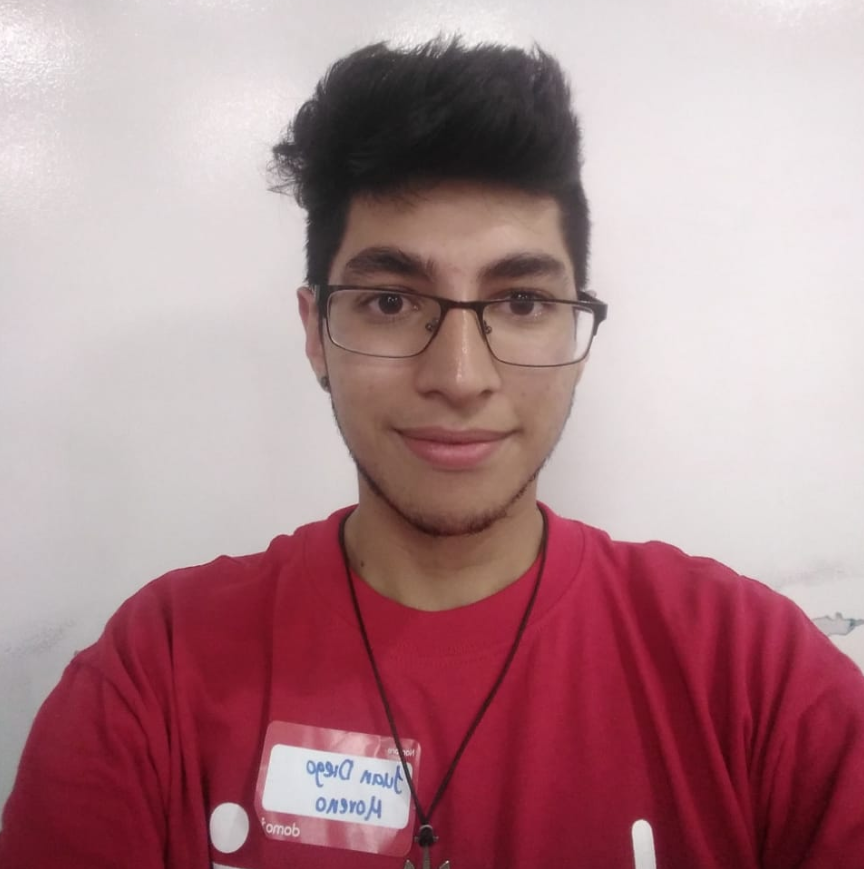
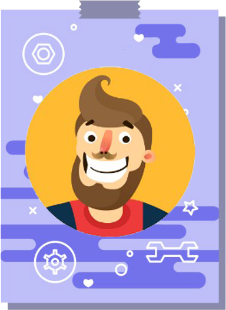
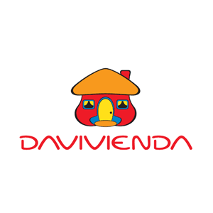

<ion-header>
  <ion-toolbar>
      <ion-buttons slot="start">
          <ion-menu-button color="primary" menu="primerMenu"> </ion-menu-button>
        </ion-buttons>
    <ion-title>chat</ion-title>
  </ion-toolbar>
</ion-header>

<ion-content>
 <!-- List of Sliding Items -->
<ion-list>
    <ion-item-sliding>
      <ion-item>
        
        <ion-label> Juan Diego Moreno</ion-label>
        <ion-icon name="checkmark"slot="end" ></ion-icon>     
         <ion-icon name="checkmark"slot="end" ></ion-icon>

      </ion-item>
      <ion-item-options side="end">
        <ion-item-option [routerLink]="'/conversation'" routerDirection="conversation" >Chat</ion-item-option>
      </ion-item-options>
    </ion-item-sliding>
  <br>
    <ion-item-sliding>
      <ion-item>
          
        <ion-label>Sebastian Gaspar</ion-label>
        <ion-icon name="checkmark-circle-outline"slot="end" ></ion-icon>

      </ion-item>
      <ion-item-options side="end">
        <ion-item-option [routerLink]="'/conversation'" routerDirection="conversation">Chat</ion-item-option>
      </ion-item-options>
    </ion-item-sliding>

    <br>
    <ion-item-sliding>
      <ion-item>
          
        <ion-label>Evento Experimenta</ion-label>
        <ion-icon name="checkmark-circle-outline"slot="end" ></ion-icon>

      </ion-item>
      <ion-item-options side="end">
        <ion-item-option [routerLink]="'/conversation'" routerDirection="conversation">Davievento</ion-item-option>
      </ion-item-options>
    </ion-item-sliding>

    <br>
    <ion-item-sliding>
      <ion-item>
          
        <ion-label>Grupo davivienda</ion-label>
        <ion-icon name="checkmark-circle-outline"slot="end" ></ion-icon>

      </ion-item>
      <ion-item-options side="end">
        <ion-item-option [routerLink]="'/conversation'" routerDirection="conversation">Davigrupo</ion-item-option>
      </ion-item-options>
    </ion-item-sliding>
  </ion-list>
</ion-content>
